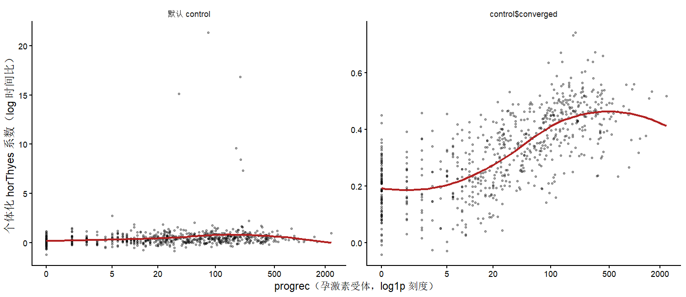

4. pmodel()：个体化模型
相似性权重、fun 的用法，以及一条坏掉的文档路径
pmodel() 是 model4you 区别于普通子组分析的地方： 它不给出”亚组 A 的治疗效应是 0.4”，而是给出每个人各自的一组模型参数。
机制：森林只用来定义”谁和谁相似”
理解这个函数只需要一句话：森林不预测任何东西，它只产生权重。
对目标个体 \(i\)，森林给出一列权重 \(w_i = (w_{i1}, \dots, w_{in})\)， \(w_{ij}\) 是训练样本 \(j\) 与 \(i\) 落在同一终末节点的（加权）次数。 然后用训练数据按这列权重重新拟合基模型：
\[ \hat\theta_i = \arg\max_\theta \sum_{j=1}^{n} w_{ij} \, \ell(\theta; \text{训练数据}_j) \]
源码里就是一行 update(model, weights = w, subset = w > 0, data = dat)， 其中 dat <- x$data 是森林的训练数据。
newdata 不参与拟合
这是最容易误解的一点：newdata 只用来算权重 （predict(x, type = "weights", newdata = newdata)）， 拟合用的始终是训练数据。所以：
newdata里不需要有结局变量的真实值——只要分割变量齐全就行；- 新样本的信息不会进入参数估计，它只是在问”训练集里谁和我像”；
- 因此
pmodel()可以直接用于未随访的新病人。
签名
pmodel(
x = NULL, # pmforest 对象，或权重矩阵（后者是坏的，见下）
model = NULL, # 基模型；NULL 时取 x$info$model
newdata = NULL, # 目标个体；NULL 时用训练数据
OOB = TRUE, # 用训练数据时是否用袋外相似性
fun = coef, # 对每个个体化模型施加的函数
return_attr = c("modelcall", "data", "similarity")
)fun——决定返回什么
fun |
返回 | 用途 |
|---|---|---|
coef（默认） |
个体 × 参数的矩阵 | 最常用 |
identity |
模型对象的 list，类为 pmodel_identity |
要做 objfun()/logLik()/pmtest() 时必须用它 |
| 自定义函数 | 任意 | 把参数换算成临床量纲 |
## (1) 系数矩阵
coefs <- pmodel(frst)
dim(coefs) #> [1] 686 2
head(coefs, 3)
#> (Intercept) horThyes
#> 1 7.669825 0.2510374
#> 2 7.968228 -0.1671617
#> 3 7.402913 0.1152114
## (2) 模型对象
pmods <- pmodel(frst, fun = identity)
class(pmods) #> "pmodel" "pmodel_identity" "list"
class(pmods[[1]]) #> "survreg"把 AFT 系数换算成中位生存时间差
Weibull AFT 的 horThyes 是 log 时间比，临床上不好读。 包作者在 2017 年论文的复现脚本里给出了这个 fun， 把它换算成中位生存时间的绝对差（天）：
coeffun <- function(model) {
coefs <- c(coef(model), scale = model$scale)
p <- 0.5
coefs["median_s0"] <- qweibull(p, shape = 1/coefs["scale"],
scale = exp(coefs["(Intercept)"]))
coefs["median_s1"] <- qweibull(p, shape = 1/coefs["scale"],
scale = exp(coefs["(Intercept)"] + coefs["horThyes"]))
coefs["median_sdiff"] <- coefs["median_s1"] - coefs["median_s0"]
coefs
}
pm_med <- pmodel(frst, fun = coeffun)前 6 个病人（GBSG2，加了 converged 约束的 25 棵树森林，seed = 2）：
(Intercept) horThyes scale median_s0 median_s1 median_sdiff
1 7.758 0.228 0.673 1829.212 2296.640 467.428
2 7.444 0.348 0.728 1308.686 1852.701 544.015
3 7.392 0.330 0.747 1234.886 1717.551 482.665
4 7.582 0.276 0.707 1514.659 1996.923 482.263
5 7.685 0.411 0.671 1701.405 2565.591 864.186
6 7.230 0.118 0.835 1015.924 1142.701 126.777全体分布：
中位生存时间差（天）
Min. 1st Qu. Median Mean 3rd Qu. Max.
-42.8 335.7 600.1 649.8 908.7 2280.5这个尺度比 log 时间比好沟通得多，而且换尺度会改变异质性的样子： 即使 horThyes 恒定，基线风险不同的人中位生存差也不同。 关于尺度依赖的完整讨论见本书 效应修饰的效应尺度。
OOB——袋外相似性
只在 newdata = NULL（对训练数据本身算个体化模型）时起作用。 OOB = TRUE（默认）时，每个观测的相似性只从没有用到它的那些树里统计， 避免”自己和自己相似”造成的过拟合。
实测差别（GBSG2，ntree = 25，加了 converged 约束的森林）：
| 最小 | 中位 | 最大 | |
|---|---|---|---|
OOB = TRUE |
−0.041 | 0.332 | 0.741 |
OOB = FALSE |
0.059 | 0.326 | 0.563 |
两者相关 0.854。OOB = FALSE 的范围更窄—— 每个人的模型里都混进了自己这一行，估计被拉向”所有人都差不多”。 帮助页对 OOB = FALSE 的评价是 not suggested，照办即可。
ntree 太小时会静默退回基模型
若某个观测的权重全为 0（没有一棵树把它和别人分到一起）， 函数返回基模型的系数并警告：
Warning: The weights for one observation are all 0, return base coefficients.
A solution may be increasing ntree.ntree = 2 时这条警告刷屏。问题在于 R 默认只显示前 50 条警告， ntree 中等时可能只有少数几个观测受影响，混在一堆 gettree 弃用警告里很容易漏掉，而这些人的”个体化”效应其实是全体平均。
检查办法：
sum(rowSums(predict(frst, type = "weights", OOB = TRUE)) == 0)return_attr——控制返回的附加属性
默认 c("modelcall", "data", "similarity")，三样都带上：
| 属性 | 内容 | 大小 |
|---|---|---|
modelcall |
基模型的 call | 很小 |
data |
newdata 或训练数据 |
一份数据框 |
similarity |
相似性权重矩阵 | \(n_{\text{train}} \times n_{\text{new}}\) |
print() 会把权重矩阵整个打出来
pmodel 对象没有自己的 print 方法，打印时会连同属性一起输出。 在 GBSG2 上 similarity 是 686 × 686， print(pmodel(frst)) 会刷出几十万个数字。
要么加 unclass()/head() 只看系数，要么在调用时就关掉属性：
pm <- pmodel(frst, return_attr = character(0)) # 只要系数矩阵objfun(pmodel(..., fun = identity)) 需要 data 属性， 不能在那条路径上关掉它（否则报 Object pmodel_identity has to have a data attribute for objfun()）。
x 传权重矩阵：文档支持，实际不可用
帮助页写：
x: cforest object or matrix of weights.
model: model object. If NULL the model inx$info$modelis used.
并且函数开头确实为矩阵准备了分支。但后面计算每个个体模型时写的是：
get_pmod <- function(w) {
...
dat <- x$data # ← x 是矩阵时，这里必然失败
dat$w <- w
pmod <- update(model, weights = w, subset = w > 0, data = dat)
fun(pmod)
}实测：
W <- predict(frst, type = "weights", OOB = TRUE)
dim(W) #> [1] 686 686
pmodel(x = W, model = bmod)
#> Error in x$data : $ operator is invalid for atomic vectors这条路径在 0.9-9 下必定失败，与权重矩阵的内容无关。
需要用自定义权重（例如自己构造的相似性、或来自另一片森林的权重）时， 绕过办法是自己写那三行：
fit_one <- function(w, model, data) {
if (sum(w) == 0) return(coef(model))
coef(update(model, weights = w, subset = w > 0, data = data))
}
res <- t(apply(W, 2, fit_one, model = bmod, data = GBSG2))依赖图：个体化效应随协变量怎么变
个体化系数最常见的用法是画依赖图（dependence plot）—— 把 \(\hat\beta_{1i}\) 对候选修饰变量作散点：
library("ggplot2")
dp <- data.frame(eff = pmodel(frst)[, "horThyes"], progrec = GBSG2$progrec)
ggplot(dp, aes(x = progrec, y = eff)) +
geom_point(alpha = .35, size = .9) +
geom_smooth(method = "loess", formula = y ~ x, se = FALSE, colour = "firebrick") +
scale_x_continuous(trans = "log1p") +
labs(x = "progrec", y = "个体化 horThyes 系数（log 时间比）") +
theme_classic()
pmforest() 默认设置下的依赖图，纵轴被几个极端值撑开 （最大值 21.3，即”生存时间乘以 \(e^{21.3}\)“），趋势被淹没； 右：加上”两臂各 > 20”约束后，与 progrec 的单调关系清楚显现。 两幅图的纵轴刻度不同。
图 195.1 两侧用的是同一个种子、同一份数据， 差别只在 control。 与 progrec 的 Spearman 相关从 0.281 升到 0.730； 把系数换算成中位生存时间差之后，这个相关是 0.735。
图上的趋势来自 \(\hat\beta_{1i}\) 与 progrec 的关联。 model4you 不做正交化、不做倾向评分加权， 所以在观察性数据上这条曲线混杂了预后效应与选择效应。 和 grf::causal_forest() 那套正交化框架的区别，见 grf 包官方教程中译。
即便在随机试验里，也要记住森林的权重来自参数不稳定性检验， 默认同时针对截距——纯预后变量同样会让权重发生变化。